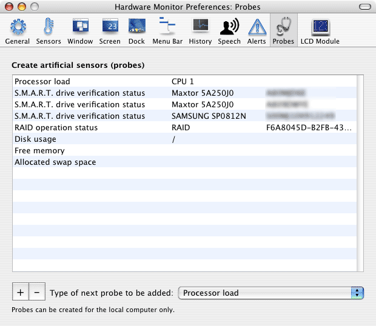

|
Defining artificial operating system sensors |
Introduction
In addition to "real" sensors Apple has built into your Mac, Hardware
Monitor can also monitor other operational values of your computer. This is
done by creating artificial software sensors, which are called Probes. This
feature is available in Hardware Monitor only.
You can define an unlimited number of probes that monitor the following aspects
of the operating system:
- the current load on each processor core. Load is defined as percentage
of time where the processor is actually "doing" anything, as opposed to the
time where it is idle.
- the current average load of all processor cores. If your
computer contains multiple processing units, the load characterstics will
be combined into one single value.
- the current number of processes handled by the operating system.
- disk usage on each volume. Usage is defined as percentage of allocated
storage space in relation to total storage space.
- free storage space on each volume, measured in bytes.
- used storage space on each volume, measured in bytes.
- free memory, measured in bytes of physical RAM.
- used active memory, measured in bytes of physical RAM. This is memory in
use by running applications and the operating system, which has been accessed
in the last few milliseconds.
- used inactive memory, measured in bytes of physical RAM. This is memory
in use by running applications and the operating system, which has not been
accessed in the last few milliseconds. Although this memory is allocated
and in use, these blocks are candidates to be moved out to swap files on
the hard disk, in case other applications are needing physical RAM at a more
active rate.
- used non-pageable memory, measured in bytes of physical
RAM. This is memory in use by running applications and the operating system
which is not allowed to be moved out to swap files on the hard disk.
- number of page-ins. This is the number of 4 KB blocks
currently being moved from the hard disk into physical memory. This includes
swap operations (blocks that were moved out to swap files and are now loaded
back), but also includes normal load operations, when applications use optimized
access techniques for reading files.
- number of page-outs. This is the number of 4 KB blocks
currently being moved from physical memory to the hard disk. This includes
swap operations (blocks that are being moved out to swap files), but also
includes normal save operations, when applications use optimized access techniques
for writing files.
- allocated swap space, measured in bytes of storage space.
This is the number of bytes currently pre-allocated on the hard drive
for use during swap operations.
- swap space in use, measured in bytes. This is the actual amount of virtual
memory currently swapped out to disk.
- network interface outgoing packets: The number of data packets currently
being transferred from the computer to the network on a selected network
interface. Hardware Monitor handles this as a unitless counter, but because
the interfaces are monitored at a rate of one sample per second, the reading
will be equivalent to the transfer speed, measured in packets per second.
- network interface incoming packets: as before, but for incoming data packets.
- network interface outgoing bytes: The number of bytes (displayed as kilobytes)
currently being transferred from the computer to the network on a selected
network interface. Hardware Monitor handles this as memory size, but because
the interfaces are monitored at a rate of one sample per second, the reading
will be equivalent to the transfer speed, measured in kilobytes per second.
- network interface outgoing bytes (total): The number of bytes in total
(displayed as megabytes) which have been transferred from the computer to
the network on a selected network interface since the operating system has
been started.
- network interface incoming bytes: analog to the number of outgoing bytes,
this probe monitors the incoming bytes.
- network interface incoming bytes (total): analog to the number of outgoing
bytes (total), this probe monitors the total number of incoming bytes.
- network interface output errors: the current number of network errors when
the selected interface is trying to send data to the network. Hardware Monitor
handles this as a unitless counter, but because the interfaces are monitored
at a rate of one sample per second, the reading will be equivalent to the
number of errors per second.
- network interface input errors: the current number of network errors when
the selected interface is receiving data from the network. Hardware Monitor
handles this as a unitless counter, but because the interfaces are monitored
at a rate of one sample per second, the reading will be equivalent to the
number of errors per second.
- network interface collisions: the current number of network
collisions seen by the selected interface. Hardware Monitor
handles this as a unitless counter, but because the interfaces are monitored
at a rate of one sample per second, the reading will be equivalent to the
number of collisions per second. Note that only certain network technologies
can experience data collisions, for example 10Base-5 shared Ethernet.
- S.M.A.R.T. drive verification status, for each connected
drive which is online and supports self monitoring via the S.M.A.R.T. industry
standard. The value will be 1 if the drive's diagnostic processor estimates
that the drive will survive the near future without failure. The value will
be 0 if the drive is estimating that its lifetime is about to end. See also
the section Displaying
disk monitoring data for more information on S.M.A.R.T. technology.
- RAID operation status, for each software RAID set created by Mac OS X.
The value will be 1 if the RAID set is OK and fully operational. The value
will be 0 if the status of the RAID set is degraded, e.g. if one disk of
the RAID set has failed. Only RAID sets based on Mac OS X system software
are supported. You cannot create probes for third-party RAID solutions because
there is no common standard to support this.
- electrical power, for each pair of physical voltage and
current sensors you define. If your computer contains a voltage and an amperage
sensor which both monitor the same object, e.g. a battery unit, or a processor
card, you can define a virtual power sensor which automatically computes
the electrical power of this object. Note: You are responsible
for selecting a pair of sensors for which the definition of power makes sense.
Hardware Monitor will allow that you combine electrical sensors which monitor
different devices, e.g. the voltage sensor of a battery combined with the
amperage sensor of a CPU card, but the resulting power value won't make any
sense in this case.
- remaining battery capacity, defined as percentage of current
battery capacity in relation to total battery capacity. This is a virtual
sensor you can define for each battery unit.
Note: If you are using internal "hot-swap" drives, or external eSATA drives,
a probe of the type S.M.A.R.T. drive verification status will also register
a hard disk error when you are switching off or removing the drive.

Creating and editing probes
Creating a new probe is possible with the section Probes in
the Preferences window of Hardware Monitor. Select the desired type of probe,
then press the button + below the left bottom corner of the probe
table. If it is necessary, Hardware
Monitor will ask for additional data to create the probe, e.g. the processor
number for a CPU load sensor, or the hard drive for a virtual S.M.A.R.T. sensor.
The probe will be added immediately.
Probes behave the same way as "real" sensors. You can use them
without any restrictions, for example to define alerts, to record history data,
to display them in output windows, etc.
To delete a probe, select its entry in the table, then press
the - button below. History data of a deleted probe will be deleted
as well. It is not possible to recover history data of a deleted probe even
if you attempt to recreate the same probe later.
It is not possible to create two identical probes,
i.e. probes of the same type which monitor the very same object.
Hardware Monitor
can create probes for the local computer only. It is possible to monitor
probes on remote computers as well, but in this case you'll have to create
them with a copy of Hardware Monitor running on the remote computer first.
Importing and exporting probe definitions
If you have created a complex setup of artificial sensors, you
might like to reuse this definition on other computers of the same model series.
This is possible even if you don't use a Mac OS X network with roaming user
accounts: You can export and import the probe definitions using files.
To export the current list of probe definitions, select the menu
item Export probes… from the pull-down menu Import/Export in
the upper right corner of the pane Probes. After specifying a
file name, the definitions will be saved.
To import a file with probe definitions, select the menu item
Import probes… from the pull-down menu Import/Export.
After selecting a file, the definitions will be loaded, hereby replacing all
your current probes.
It is recommended to use this feature among
computers of the same model series only. If you are trying to import a probe
definition which refers to a device unknown on the current hardware (like a
network interface, or an electrical sensor unavailable on that system), Hardware
Monitor will either discard this probe automatically, or create a non-working
probe which always gives the reading "---", depending on case. After importing
artificial sensors from a different model series, it is recommended to review
the list of probes afterwards.
Table of contents